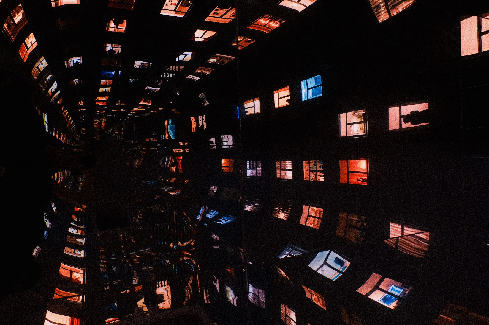

«У реки два берега»
Суздаль · Мультимедийная платформа «Коллайдер», МИРА · 2026
Автор работы «очевидное/неочевидное». Монтаж всей видеопрограммы выставки и работа с куратором. Участвовал в составе арт-группы «Берёзовый промпт».
«У реки два берега» — совместный проект МИРА и арт-группы «Берёзовый промпт» на мультимедийной платформе «Коллайдер» в Суздале. Выставка открылась 21 марта 2026 года и посвящена двойственности восприятия: отношениям человека и технологий, знакомого и нового, внутреннего и внешнего.
В Белом зале представлена инсталляция Backrooms Илая Джипова — опустевший офис, который продолжает существовать без людей. В Цифровом зале видеоработы художников раскрывают разные пары противоположностей.
Моя роль в выставке
Помимо собственной работы, я плотно работал с куратором и полностью смонтировал видеопрограмму выставки из работ всех участников арт-группы.
«очевидное/неочевидное»
Моя работа посвящена паре «очевидное/неочевидное». Она стала частью общей видеокомпозиции, в которой каждый автор рассматривает двойственность через собственную тему и визуальный язык.
Музыку для видеокомпозиции написал Дмитрий Невольник.
Видео работы «очевидное/неочевидное»
Фотографии выставки


